| 日付 | 2013年10月13日（日） - 2013年10月14日（月） | ||||
|---|---|---|---|---|---|
| 山域 | 草津周辺 | ||||
| メンバー | 家族（妻、長女・2歳、長男・0歳） | ||||
| 山行形態 | 子連れ1泊2日ホテル泊 | ||||
| アクセス | 車、リフト | ||||
| ルート (Map2) |
|
2日目
本日は快晴。朝食前に外を散歩してみる。
冬はスキーのゲレンデとなるが、今は草原が広がっている。
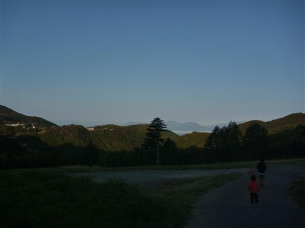
昨日走った国道292号を、今日は反対方向に走って湯釜をめざす。
この道は標高が高いところを走っていて、晴れていれば本当に展望が良い。
国道の最高標高点はこの道にある。
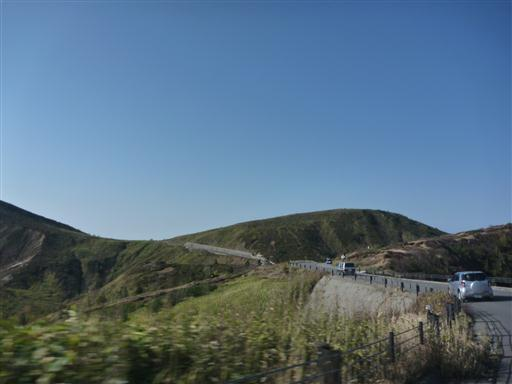
湯釜の大駐車場に到着。
既に多くの車が停まっているが、この時間だとまだ余裕がある。
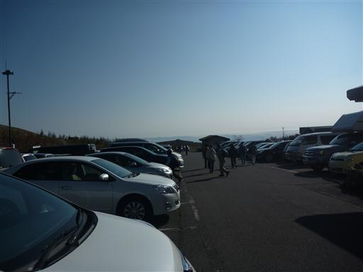
駐車場から湯釜展望台への道に向かう。辺りは観光客の姿が多い。
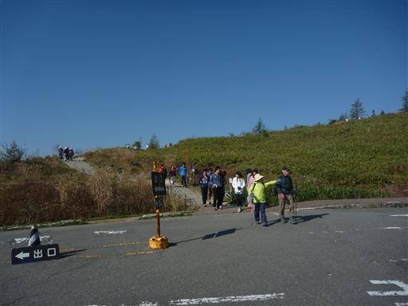
一大観光地のため道は完全に整備されている。
展望台まで人の列が続いている。
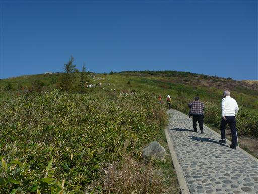
眼下に国道292号が見えてくる。
右手の目立つピークは笠ヶ岳、遠景は妙高山、高妻山だ。
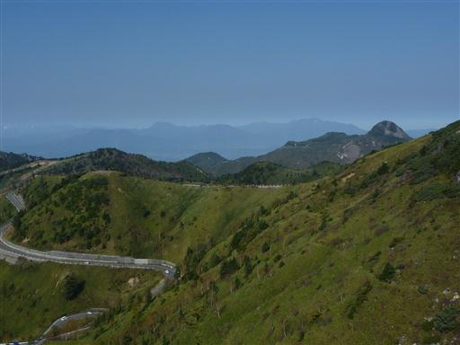
歩くこと20分ほどで湯釜展望台に到着する。
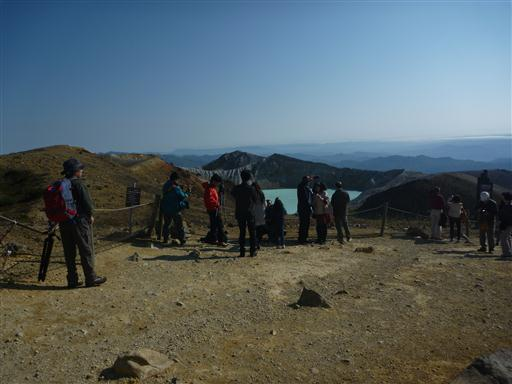
湯釜は草津白根山を代表する景観だ。
不思議な色の水を湛えた火口湖で、phは1.0前後と非常に酸性度が高い。
火口縁の白い岩壁もまた不気味だ。
以前は湯釜の側まで行けたのだが、今は有毒ガスが危険との理由から立ち入りが禁止されている。
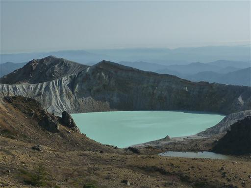
ここからは四囲の展望が楽しめる。
中央右の目立つ山が四阿山、その左に遠く見えるのは前回登った湯ノ丸山だ。
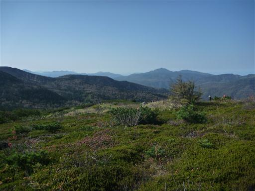
展望台の先に白根山の山頂があるのだが、残念ながら道はつくられていない。
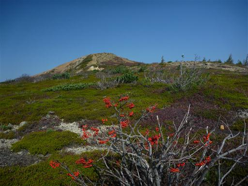
駐車場に戻ってくる。なぜバイクをバックで停めるのだろう…？
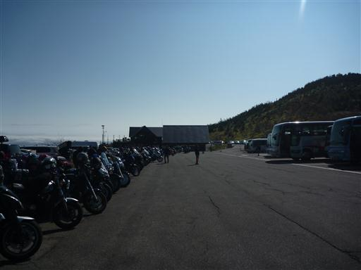
山に行く準備をした後、今度は湯釜とは反対方向に向かう。
車道のすぐ側にあるのが弓池。背後に見えるのは蓮来岩だ。
湯釜と異なり、こちらは落ち着いた感じの美しい風景だ。
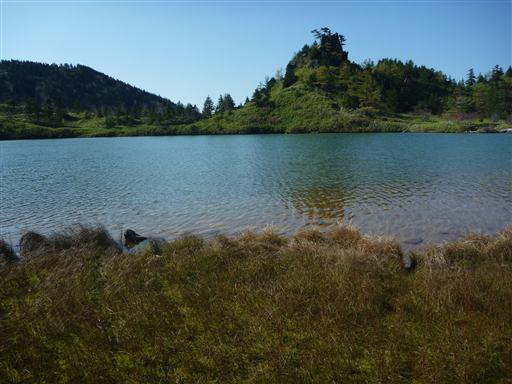
弓池の周りには木道が整備されている。ここの木道は隙間が無くて娘も歩きやすそうだ。
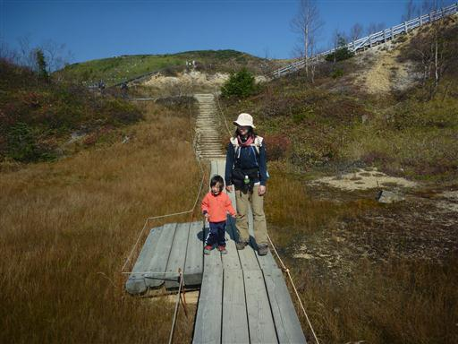
弓池を離れて、まずは目の前に見える逢ノ峰を目指す。
大駐車場のすぐ側にあるのに、こちらは人影が非常に少ない。

辺りの紅葉はもうほとんど終わっているが、まだ若干色づいている葉もある。
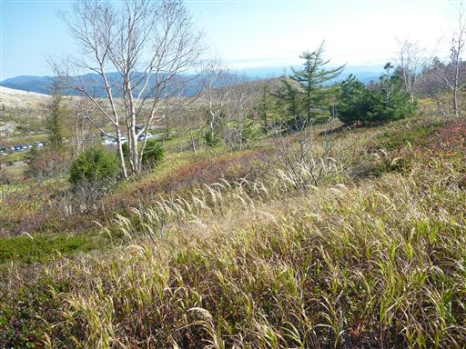
延々と続く木段を登っていく。
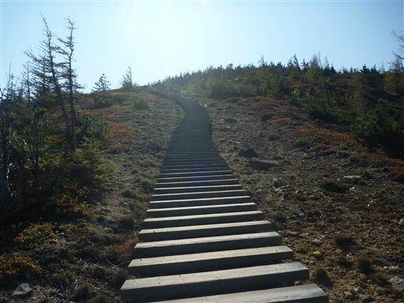
標高を上げると、眼下に弓池と駐車場が見えてくる。
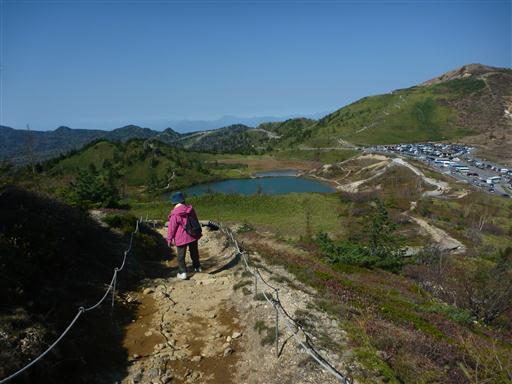
逢ノ峰の山頂に到着。まず目を引くのが白根山の噴火口だ。
噴火口の中にある湯釜は残念ながらここからは見えない。
今は閉鎖中の遊歩道がはっきりと見えている。
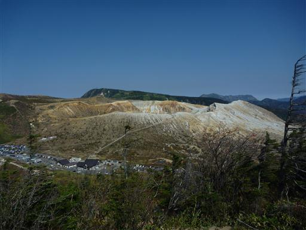
白根山の側には広大な平地が広がっている。
白根山から遠ざかるほど緑が広がっている。
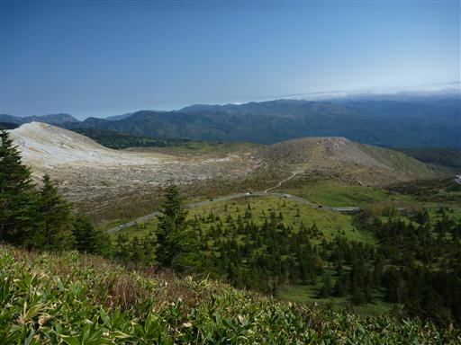
逢ノ峰は駐車場と本白根山の間にあるピークだ。
本白根山に向けて、一旦逢ノ峰を下山する。
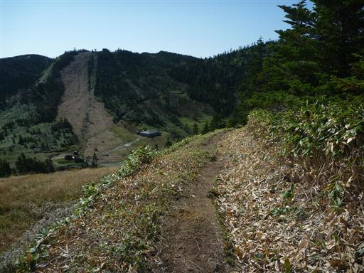
こちらの道も延々と木道が続く道だ。
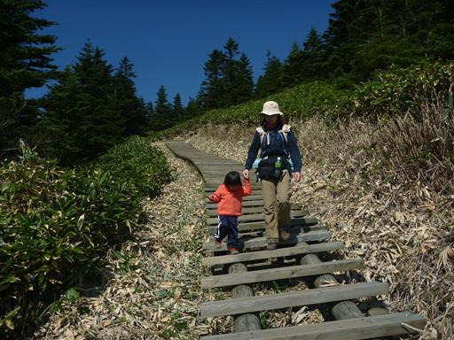
逢ノ峰と本白根山の鞍部に下りてくる。
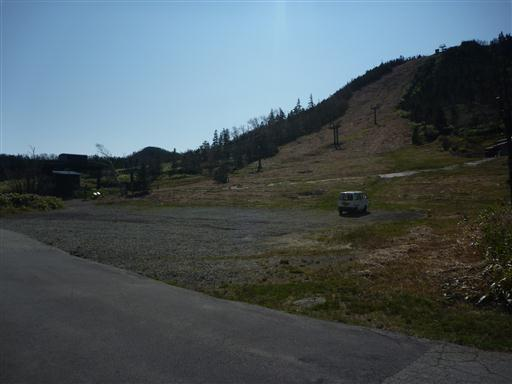
ここからスキー場のリフトに沿って、木のない道を登っていく。
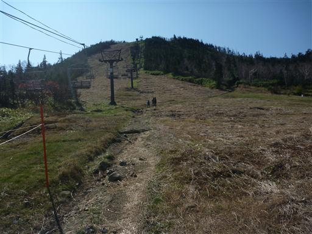
錆びた鐘が掛かっている。ぼろぼろだが、そこそこいい音が鳴る。
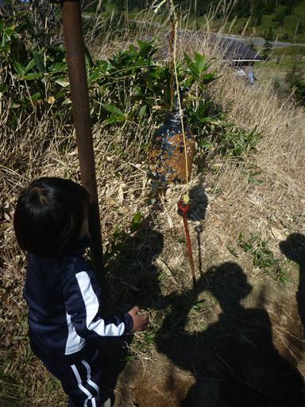
しばらく登ると、傾斜のほとんどない木道が続くようになる。
美しい笹原が広がる中を、のんびりと歩いていく。
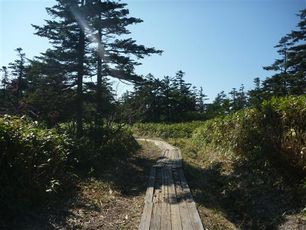
足元に赤色のきれいな実がたくさんできている。何の実だろうか？
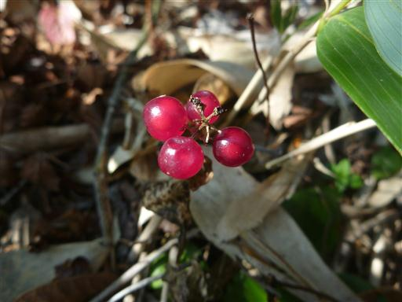
しばらく歩くと突然視界が開け、目の前に巨大な噴火口が現れる。
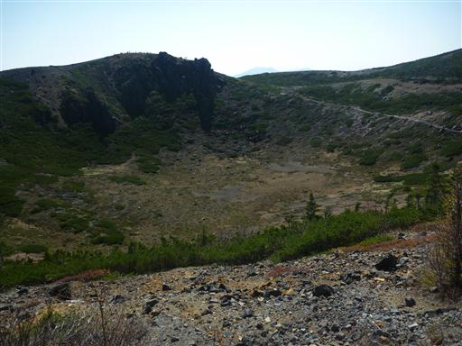
火口を回り込むようにして登山道が付けられている。
湯釜、逢ノ峰、本白根山とここまで頑張って歩いて来た娘が音を上げる。
もう11時でお腹も空いてそうなので、ここでキャリアに乗せることにする。
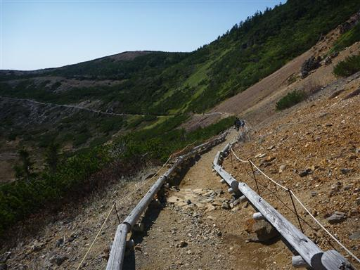
噴火口の縁の一番高くなっている場所に多くの登山者の姿が見える。
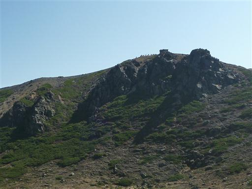
こちらは小さな噴火口。あちらこちらに噴火口の穴が開いている。
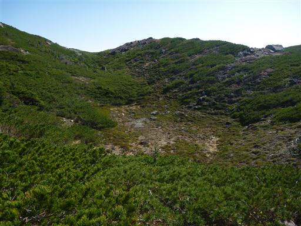
この辺りはハイマツなどの高山植物が見られ、素晴らしい景色が広がる。
ここも古い噴火口だ。初夏にはコマクサの大群落が見られるらしい。
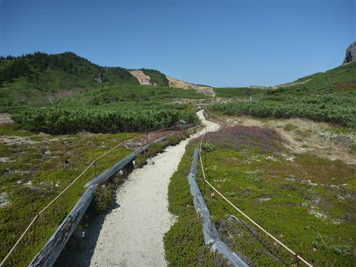
地面に不思議な模様が見られる。構造土だろうか？
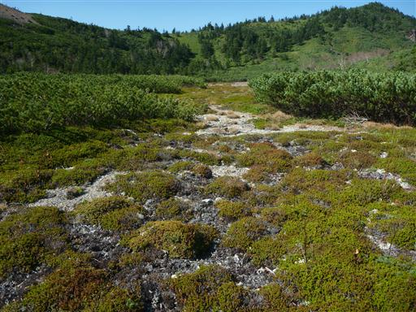
噴火口の縁に出てくると一気に展望が広がる。
幸い今日は風があまりないので、寒くなくて助かる。
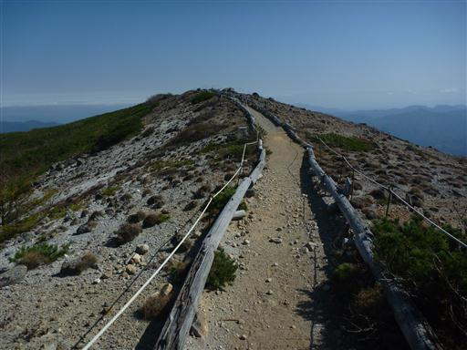
南側に浅間連峰の姿が見えている。
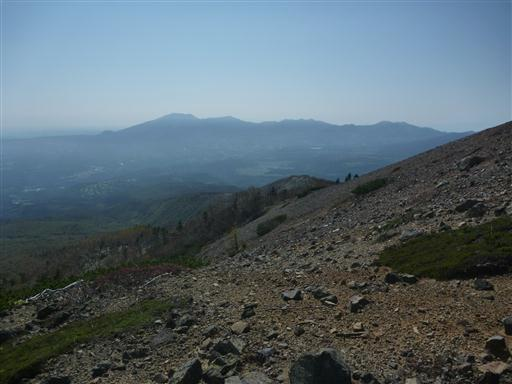
目の前に見えるのは本白根山の三角点峰。このピークには登山道が存在しない。
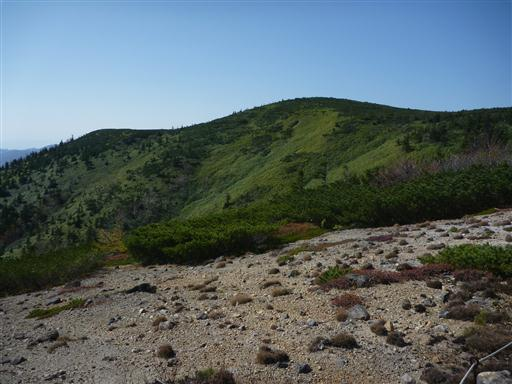
本白根山遊歩道最高地点に到着。標高2150m。
本白根山の山頂付近はかなり複雑な地形になっているが、
その中の最高地点、いわゆる山頂にはなぜか登山道が通じていない。
仕方がないので登山者の多くは、登山道がある中で最も標高の高いこの地点を山頂とみなしている。
しかし登山道の途中にある場所で、あまり山頂という感じはしない。
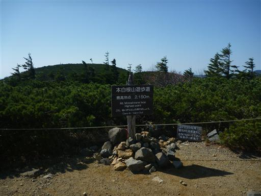
目の前に見えるのが本白根山の山頂だ。
昼食をとっていると団体登山者がやってきて百名山登頂の祝杯を上げていた。
ちなみに草津白根山という山がどこを指すのかもはっきりしない。
一般的には湯釜の近くにある白根山のことを指し、こちらは本白根山というのだが、
白根山や本白根山を総称して草津白根山と呼ぶ場合もあるようだ。
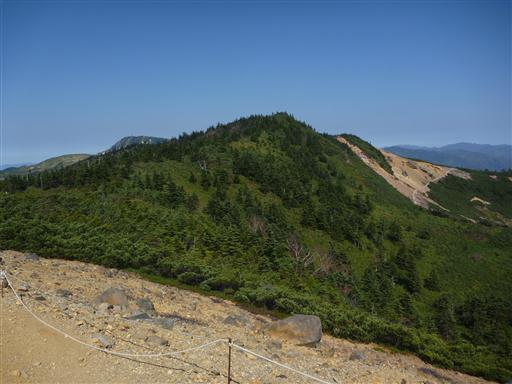
本白根山の山頂部を見渡す。目の前に見えるピークもこことさほど標高は変わらなさそうだ。
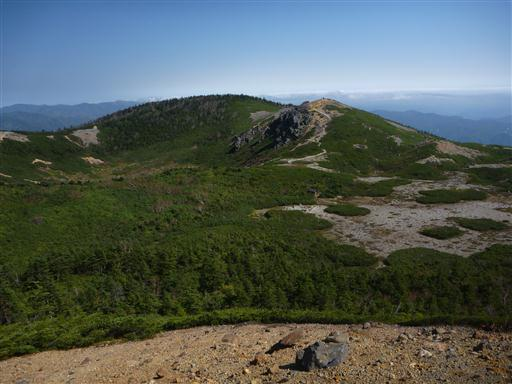
昼食をとったら元来た道を分岐点まで引き返し、先ほど見えた小ピークに登ってみる。
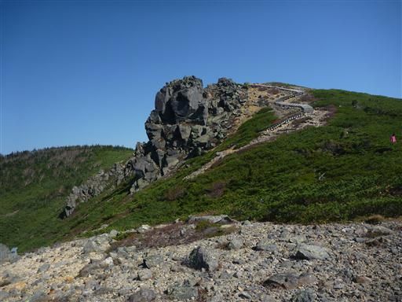
ここには「日本百名山 草津白根山 本白根山 展望所」と書かれた標柱が立っている。
こちらの方がピークっぽい感じの場所で、ここで休憩している登山者も多い。
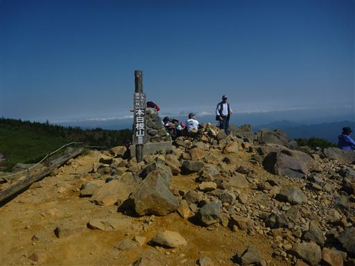
ここからは白い岩肌を見せる白根山を望むことができる。
その背後のなだらかな山は横手山、右手奥は岩菅山だ。
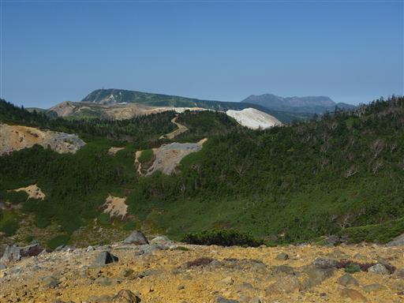
本白根山への登山道は2本あるので、下山は登りとは違う道を選択する。

眼下に草津の町並みが見えている。山に囲まれた小さな町だ。
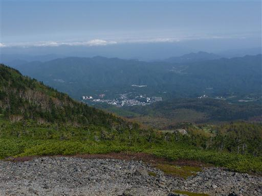
こちらの道は樹林帯に覆われていて、登りの時の道とはだいぶ雰囲気が異なる。
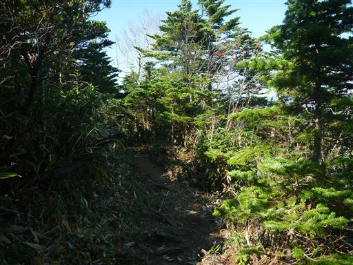
足元に鏡池が見えてきた。ここも古い噴火口だ。
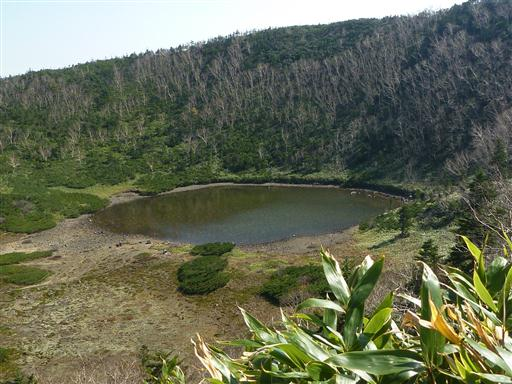
鏡池の畔に下りてみる。ハイマツが茂っていて少し歩きにくい。
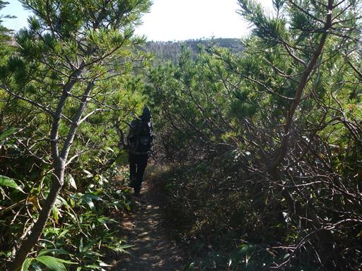
鏡池に到着。少し見にくいが、ここは湖底に亀甲状構造土が見られる珍しい湖だ。
確かに湖底に亀甲模様が見られる。
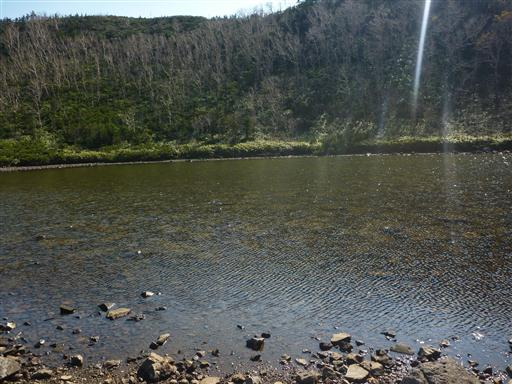
斜面にはダケカンバ林が見られる。黄葉していればきれいだっただろう。
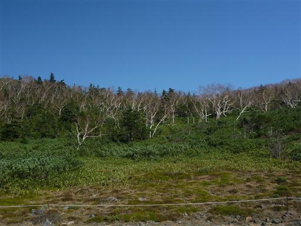
細い木道を下って行く。この辺りも紅葉はとうに終わっている。
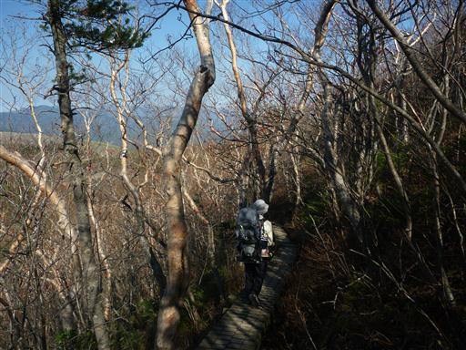
小さな沢を渡る。
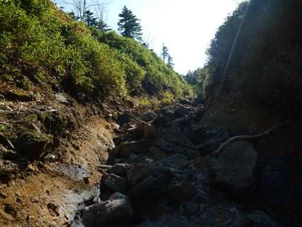
白根火山ロープウェイが見えてきた。
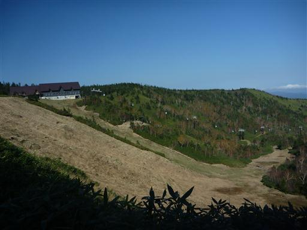
振り返ると、すっかり葉を落としたダケカンバ林が見られる。

ロープウェイ山頂駅に到着。
この辺りには特に何がある訳でもなく、今一使い勝手が分からないロープウェイだ。
ここは本白根山と逢ノ峰の鞍部で、ここで登りに使った道と合流する。
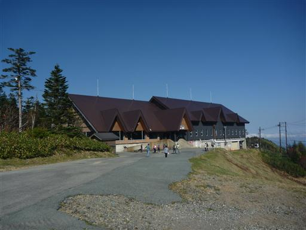
駐車場まで逢ノ峰の巻道があるので、帰りはこちらの道を歩くことにする。
しばらく歩くと再び白根山が見えてくる。
湯釜の大駐車場に戻ってくる。
白根山の大きな標識。日が傾いてきて、人影は少なくなってきた。
湯釜旧展望台への道は閉ざされている。近くで湯釜を見てみたかったが…
レストハウスで湯釜の空撮写真が見られる。見事な噴火口だ。
上空は晴れ渡っているのに、気が付くと下界は雲に覆われ始めている。
湯釜を離れ帰宅の途につくことにする。
帰りに殺生河原を少し見学する。白根火山ロープウェイの下の駅から歩いて数分の場所にある。
白い噴煙が出続けている。生き物の気配がしない不気味な場所だ。
中之条駅近くのオリーブという店で夕食をとってから帰宅する。
草津は期待通りの素晴らしい展望が広がる場所だった。
行けなかった場所もまだまだあるため、いつかまた再訪したい。